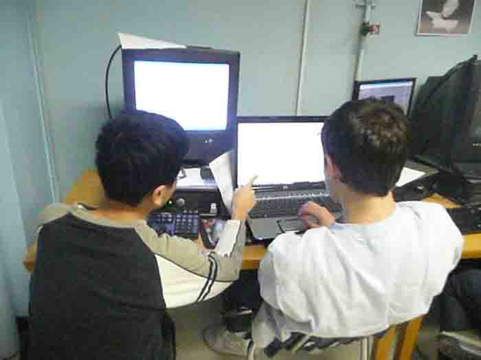

The
website team at 375 is one of the smallest sub-teams, and makes
what you are looking at right now each year. It is currently made up of
only two people, and we hope to see three or four next year, as we have
big plans for it. The two people are Kevin Chung and Stephen Ferrari
(Nano Steve), with Kevin inventing the code and Stephen creating the
images from scratch in Photoshop.
We work very hard after school
alongside the animation team after school. We went through three
websites this year, and wish we could submit them all, but we think
that this is the cleanest, efficient, and simplest one.
The only programs we use are Photoshop,
Notepad, KompoZer (a free HTML GUI editor from the Mozilla Corporation),
and rarely anything else besides Mozilla Firefox, Google Chrome, and
Internet Explorer 7 to preview and make sure it renders correctly in
all three. Next years' site will most likely use a much wider variety
of programs, including Flash, Illustrator, Dreamweaver, possibly
Fireworks, and of course, Photoshop.

{kind=link}